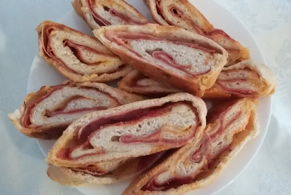

Stromboli

Description
This is some stromboli shit. It was the recipe of somebody's mother.
This is a type of stromboli. This is food. The ingredients are below.
Ingredients
- cooking spray
- 28 ounces pizza dough
- 1/2 pound smoked ham, thinly sliced
- 1/2 pound Genoa salami, thinly sliced
- 1/2 pound pepperoni, thinly sliced
- 1/2 pound shredded mozzarella cheese
- 1/2 pound white Cheddar cheese, sliced
- 1/2 cup sliced bell pepper rings
- 2 egg yolks
- 1 tablespoon water
Steps
- Spray pan w/ spray.
- Cut dough in half make each half in2 1/8 in-thicc rect.
Put ham 1 layer each rect w/ 1-inch border.
Put salami, pepperoni, mozzarella, cheddar, bell pepper on ham.
- Roll dough, tuck in end, put in pan.
- Whisk egg n water in bowl; brush o'er stromboli. Cut diagonal slice.
- Preheat oven 350 degs F. Allow stromboli to proof in warm place.
- Bake stromboli until golden brown for 20-30 mins. Cool on rack before slice.